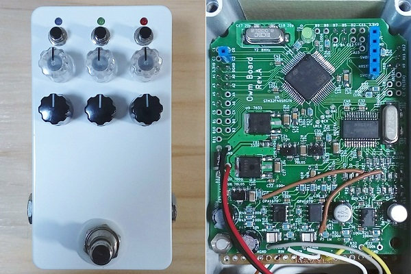
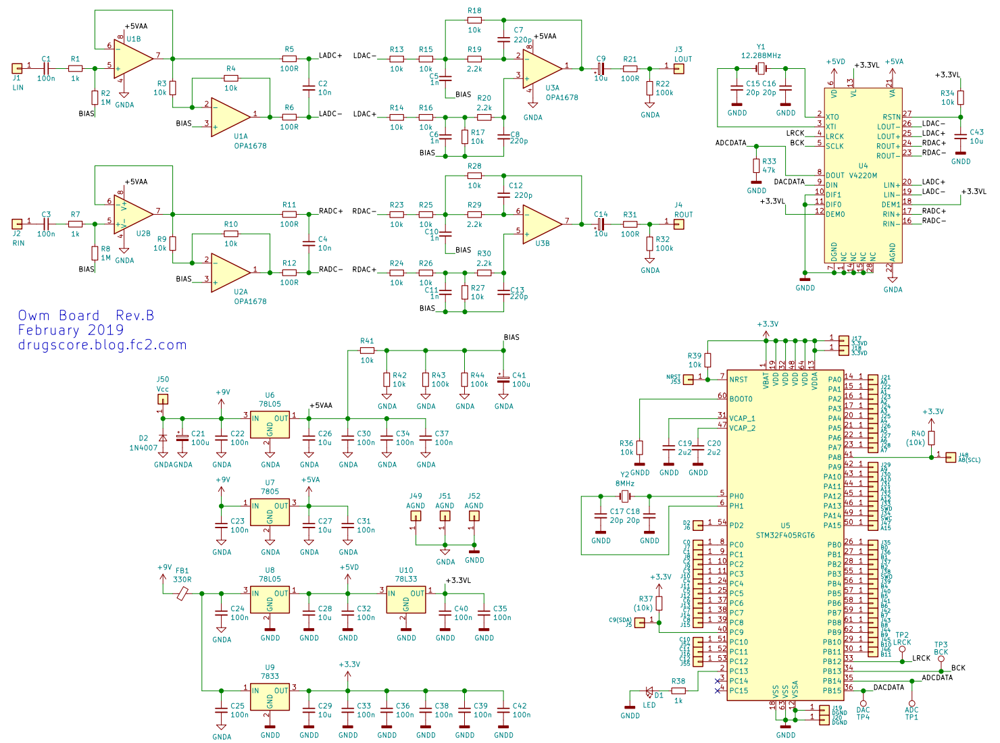
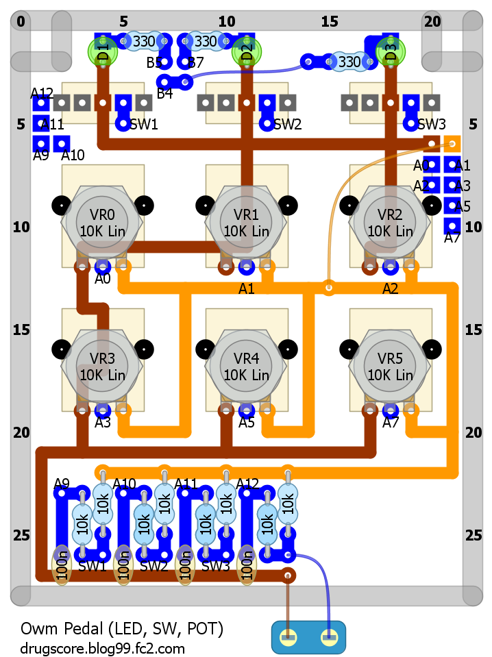
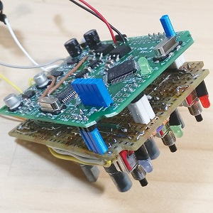
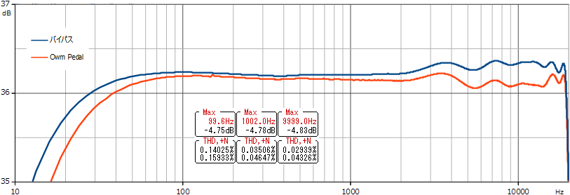

Owm Pedal ハードウェア編
2019年02月08日 カテゴリー：STM32 エフェクター

STM32F405という32ビットマイコンを搭載した自作デジタルエフェクター「Owm Pedal」です。名前は同じマイコンを搭載した既存のペダル「OWL Pedal」をもじってつけました。（Owm Pedal ソフトウェア編はこちら）
オーディオコーデックはCS4220のセカンドソース品V4220Mです。サンプリングレートが48kHzまでですが差動入出力で価格が安く（秋月電子で240円）、エフェクターに最適だと考えました。
▽回路図

＜V4220M周辺＞
データシートに入出力の回路が記載してあるのですが、抵抗値はよく使う値へと変更しました。バイアス電圧用に8.25kΩの抵抗があるところは、10kΩと100kΩ2個を並列にして8.33kΩとしています。
V4220Mのデータシートでは音量等をコントロールできそうに書いてありますが、実際はできないようです。マスターモードで動作させる場合は8番(DOUT)ピンに47kΩのプルダウン抵抗を入れます。また、CS4220のデータシートには電源オン時に27番（RSTN）ピンを10msの間LOWにしておくように書いてあるため、10uFのコンデンサを入れました。4・5・8・9番ピンからマイコンへ接続しますが、通信線の長さが短いためダンピング抵抗は不要かと思います。
＜電源＞
電源はレギュレータで以下のように分けました。
・マイコン用→デジタル3.3V(100mA)
・V4220M用→デジタル5V(20mA) デジタル3.3V(5mA) アナログ5V(60mA)
・OPA1678×3用→アナログ5V(20mA)
アナログ5V電源は通常分離する必要はありませんが、万一問題があったとき基板発注し直すのが嫌なので分けています。
▽DSP基板（Owm Board）レイアウトについて（KiCadデータはGitHubへ）
真ん中あたりに電源、上側がデジタル、下側がアナログという配置となっています。GNDは裏面を一面プレーンにしました。入力のカップリングコンデンサはPMLCAPを使っており、やや大きくて高価ですが歪率は下がるでしょう。残念ながらBIASに接続すべきところをGNDにつなぐというありがちな間違いをしてしまいましたので、内部写真では妙なジャンパー線が写っています（KiCadデータは修正済）。
ピン間隔が狭いICはパッドを1mm程度長くすると半田付けしやすいです。マイコンのピンはほとんど使えるように引き出しました。一応I2C用にプルアップ抵抗の取り付けもできます。マイコン上側のLEDはデバッグ用のつもりです。水晶振動子周りのパターン設計は下記ページを参考にしました。
・水晶振動子 ガイド - RSオンライン
▽ポット類基板レイアウト

ポット類基板と筐体はRasPd4のものを使いまわしました。回路図は描いていません。無理やりジャンパーを飛ばしてチャタリング対策の抵抗やコンデンサを入れました。下写真のように基板を合体させます。

とりあえず何もエフェクトをかけないスルー音が出るようにプログラミングし、周波数特性と歪率を測定しました。歪率は、クリップしない最大入力約0.7Vrmsでの結果です。

100Hzの歪率が思ったより悪いですが問題ないでしょう。ノイズも測定限界以下だったので、歪み系エフェクトでもおそらく大丈夫だと思います。